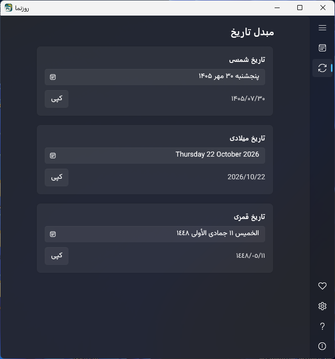

تاریخ در System Tray
نمایش عدد روز شمسی روی آیکون نوار وظیفه و نمایش تاریخ شمسی و میلادی در tooltip.
تقویم بازشونده
نمای جمعوجور تقویم کنار نوار وظیفه با نماهای روز، ماه و سال.
تقویم اصلی
نمای ماهانه بزرگتر با تاریخ میلادی و قمری در خانههای روز، شماره هفته و حرکت با کلیدهای جهتدار.
مبدل سهتقویمه
تبدیل تاریخ بین شمسی، میلادی و قمری؛ تاریخ قمری بر اساس منبع انتخابشده در تنظیمات.
مناسبتها و تعطیلات
مناسبتهای رسمی همراه برنامه برای سالهای ۱۳۸۳ تا ۱۴۰۵ و قواعد ثابت تقویمها برای پوشش سالهای بعد. برخی تاریخهای قمریِ مبتنی بر قاعده ممکن است تقریبی باشند.
تم و زبان
تم روشن، تاریک یا هماهنگ با ویندوز؛ رابط کاربری فارسی و انگلیسی.
راهنمای داخلی
راهنمای موضوعی با امکان جستوجو و دسترسی از منو یا کلید F1.
اجرای خودکار
امکان اجرای برنامه هنگام ورود به ویندوز، به انتخاب کاربر.
تصاویر محیط برنامه
تصاویر زیر از نسخه واقعی روزنما گرفته شدهاند.


